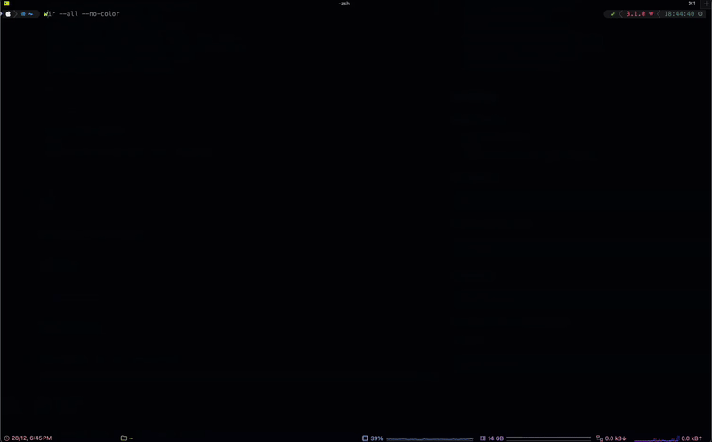

Demo

Features
- Check what process is using a specific port (TCP and UDP)
- Get detailed information about a process by PID
- List all running processes on the system
- Show the full process ancestry tree
- Display process environment variables
- Interactive mode to kill processes with a keypress
- Human-readable process states
- Process uptime tracking
- Multiple output formats (normal, short, JSON, tree)
- Security warnings for risky configurations
- Cross-platform support (macOS and Linux)
- Short flags for every option
Installation
Via Homebrew (macOS):
brew tap AlbertoBarrago/tap
brew install wirBuilding from source:
make
sudo make installSource
Full documentation, usage, and source code on GitHub.